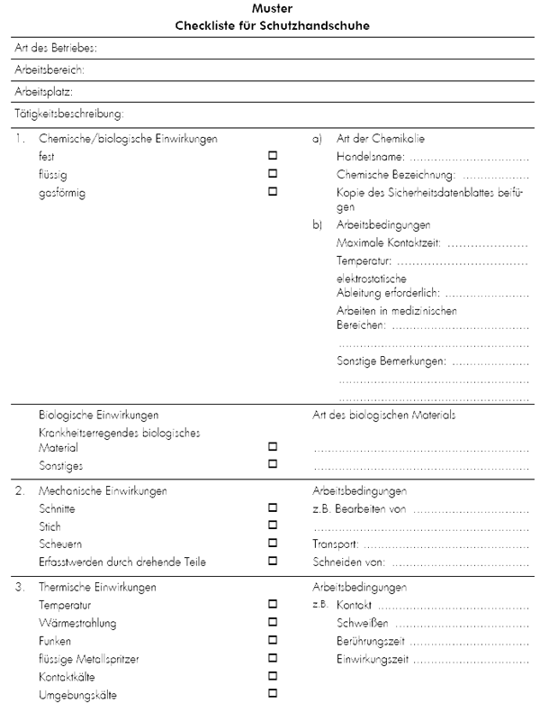
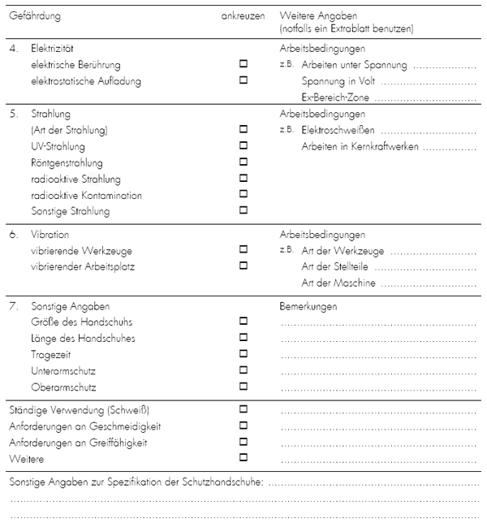

Checkliste für die Auswahl von Schutzhandschuhen
- Diese Checkliste ist vom Unternehmer unter Beteiligung der Benutzer zu erstellen.
- Für Arbeits- bzw. Betriebsbereiche mit unterschiedlichen Risiken sind gesonderte Checklisten zu erstellen.
- Die Checklisten dienen der Einholung von Vergleichsangeboten verschiedener Hersteller oder Lieferanten.
- Die Checklisten sollten auch Bestandteil der Beschaffungsspezifikation sein.
Sie erfordern genaue Angaben, insbesondere dann, wenn z. B. die Größe des Risikos näher beschrieben werden muss, ob es sich z. B. um Wärmestrahlung oder um Kontaktwärme handelt.

